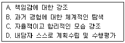
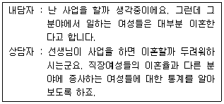
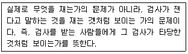
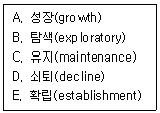
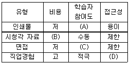
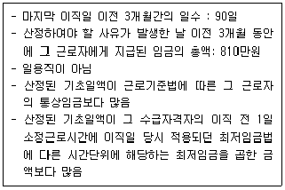

직업상담사-2급 (2011-03-20 기출문제)
1과목: 직업상담학
1. 성공적인 상담결과를 위한 내담자 목표의 특징이 아닌 것은?
- 변화될 수 없으며 구체적이어야 한다.
- 실현가능한 것이어야 한다.
- 내담자가 원하고 바라는 것이어야 한다.
- 상담자의 기술과 양립 가능해야만 한다.
(정답률: 88%)

2. 특성-요인 직업상담에서 일련의 관련있는 또는 관련없는 사실들로부터 일관된 의미를 논리적으로 파악하여 문제를 하나씩 해결하는 과정은?
- 다중진단
- 선택진단
- 변별진단
- 범주진단
(정답률: 90%)
3. 생애진로사정의 구조 중 전형적인 하루에서 검토되어야 할 성격차원은?
- 의존적 - 독립적 성격차원
- 판단적 - 인식적 성격차원
- 외향적 - 내향적 성격차원
- 감각적 - 직관적 성격차원
(정답률: 87%)
4. 다음 중 실직자 위기상담의 직접적인 목표로 가장 적합한 것은?
- 긴장감 제거와 적응능력의 회복
- 직업적성에 대한 정확한 이해
- 변화하는 직업세계에 대한 이해
- 의사결정 능력의 증진
(정답률: 76%)
5. 내담자의 부정적인 자기패배적 사고 대신에 긍정적인 자기진보적 사고를 갖도록 교수하는 체계적인 기법은?
- 근육이완훈련
- 체계적 둔감법
- 인지적 재구조화
- 스트레스 접종
(정답률: 74%)
6. 다음 중 현실치료의 특징으로만 짝지어진 것은?

- A, B, C
- B, C, D
- A, C, D
- A, B, D
(정답률: 76%)
7. 직업상담사 한계의 오류를 가진 내담자들이 자신의 견해를 제한하는 방법과 가장 거리가 먼 것은?
- 예외를 인정하지 않는 것
- 불가능을 가정하는 것
- 왜곡되게 판단하는 것
- 어쩔 수 없음을 가정하는 것
(정답률: 74%)
8. 내담자가 수집한 대안목록의 직업들이 실현 불가능할 때 상담전략으로 틀린 것은?
- 브레인스토밍과정을 통해 내담자의 대안직업 대다수가 부적절한 것을 명확히 한다.
- 최종 의사결정은 내담자가 해야 함을 명확히 한다.
- 내담자가 그 직업들을 시도하여 어려움을 겪을 때 개입한다.
- 객관적인 증거나 논리에서 추출한 것에 대해서만 대화하여야 한다.
(정답률: 76%)
9. 자기보고식 가치사정법과 가장 거리가 먼 것은?
- 과거의 선택 회상하기
- 존경하는 사람 기술하기
- 난관을 극복한 경험 기술하기
- 백일몽 말하기
(정답률: 68%)
10. 행동주의 직업상담에서 내담자가 직업선택에 대해서 무력감을 느끼게 되고, 그로 인해 발생된 불안 때문에 직업결정을 못하게 되는 것을 무엇이라고 하는가?
- 무결단성
- 우유부단
- 미결정성
- 부적응성
(정답률: 63%)
11. 내담자 중심 상담에서는 내담자를 3가지 자아간의 불일치 때문에 불안을 경험하는 사람으로 간주한다. 다음 중 그 3가지 자아에 해당하지 않는 것은?
- 현실적 자아
- 이상적 자아
- 도덕적 자아
- 타인이 본 자아
(정답률: 62%)
12. 초기상담의 유형 중 관계지향적 면담에 관한 설명으로 옳은 것은?
- 재진술과 감정의 반향 등이 주로 이용된다.
- 내담자에 의해 시작된 면담과 상담자에 의해 시작된 면담으로 구분된다.
- ‘누가, 무엇을, 어디서, 어떻게’로 시작되는 질문이 사용된다.
- 상담의 틀이 상담자에게 초점을 맞추어져 진행된다.
(정답률: 70%)
13. 정신역동적 직업상담에서 보딘이 제시한 상담에 사용할 수 있는 상담자의 반응범주가 아닌 것은?
- 비교
- 명료화
- 소망-방어체계에 대한 해석
- 감정에 대한 준지시적 반응범주
(정답률: 89%)
14. Crites는 내담자들이 경험하는 문제의 유형들에 대해 독립적이고 상호 배타적인 진단체계를 고안하였다. 다음 중 이 진단체계에 해당하지 않는 문제 유형은?
- 적응문제
- 우유부단의 문제
- 비현실성의 문제
- 현명하지 못한 선택의 문제
(정답률: 62%)
15. 다음의 면담에서 직업상담자가 택한 개입의 방법은?

- 구체화 시키기
- 논리적 분석
- 격려
- 재구조화
(정답률: 81%)
16. 직업상담자가 지켜야 할 윤리강령에 해당되지 않는 것은?
- 내담자에 관한 정보를 교육과 연구를 위해 임의로 적극 활용한다.
- 내담자를 보다 효율적으로 도울 수 있는 방법을 꾸준히 연구 개발한다.
- 내담자와의 협의하에 상담관계의 형식, 방법, 목적을 설정하고 토의한다.
- 자신이 종사하는 전문직의 바람직한 이익을 위하여 최선을 다한다.
(정답률: 82%)
17. Ginzberg가 구분한 진로선택 과정 중 현실기의 하위단계가 아닌 것은?
- 탐색단계
- 구체화 단계
- 흥미단계
- 특수화 단계
(정답률: 74%)
18. 집단상담에 대한 설명으로 틀린 것은?
- 집단상담의 최대 장점은 한 상담자가 동시에 많은 내담자를 도울 수 있다는 효율적인 점이다.
- 집단상담에서는 특정 개인의 문제가 충분히 다루어지지 않을 가능성이 높은 제한점이 있다.
- 집단상담 구성원들은 개인적인 조언보다 주변사람들의 공통 의견을 더 잘 받아들이는 경향이 있다.
- 다양한 발달단계의 이질집단이 동질집단에 비해 자극이 되고 새로운 것을 받아들이는데 더 효과적이다.
(정답률: 75%)
19. 직업상담에서 저항을 다루는 방법으로 적합하지 않은 것은?
- 내담자와의 상담관계를 재점검한다.
- 내담자의 고통을 공감해준다.
- 내담자가 위협을 느끼지 않도록 한다.
- 긴장이완법을 사용한다.
(정답률: 58%)
20. 내담자 중심 상담에서 기대하는 상담결과가 아닌 것은?
- 내담자는 현실적으로 변한다.
- 내담자는 불일치의 경험이 증가된다.
- 내담자는 문제해결에 있어 더 능률적이 된다.
- 내담자는 근본적으로 자아지각의 정도가 높아진다.
(정답률: 82%)
2과목: 직업심리학
21. 홀랜드의 흥미 이론 중 개인의 흥미 유형과 개인이 몸담고 있거나 소속되고자 하는 환경의 유형이 서로 부합하는 정도를 무엇이라고 하는가?
- 일치성(congruence)
- 일관성(consistency)
- 변별성(differentiation)
- 정체성(identity)
(정답률: 80%)
22. 국내기업에서 실시하고 있는 임금 성과급제 또는 연봉제 실시와 관련하여, 공정하고 객관적인 임금수준을 결정하기 위해서 직장 내 여러 직무들 각각이 조직효율성에 기여하는 상대적 가치를 판단하도록 해 주는 것은?
- 직무분석
- 직무평가
- 직무수행평가
- 준거개발
(정답률: 69%)
23. 한국판 웩슬러 성인지능검사(K-WAIS)의 구성에 관한 설명으로 틀린 것은?
- 언어성 검사와 동작성 검사로 대별된다.
- 총11개의 하위검사로 구성되어 있다.
- 언어성 검사에는 기본지식, 숫자 외우기, 바꿔쓰기 등이 포함되어 있다.
- 동작성 검사에는 빠진 곳 찾기, 모양 맞추기, 토막짜기 등 포함되어 있다.
(정답률: 67%)
24. 다음 중 미네소타 직업분류체계Ⅲ와 관련되어 발전된 이론은?
- Roe의 욕구이론
- Super의 평생발달이론
- Ginzberg의 발달이론
- Lofquist와 Dawis의 직업적응이론
(정답률: 79%)
25. 일반직업적성검사(GATB)에서 실물이나 도해 또는 표에 나타나는 것을 세부적인 면까지 바르게 지각하는 능력은?
- 형태지각
- 공간적성
- 사무지각
- 지능
(정답률: 61%)
26. 2차 세계대전 중에 미국 공군에서 개발한 것으로 모든 원점수를 1〜9까지의 한자리 숫자체계로 전환시킨 것은?
- 스테나인 척도
- 써스톤 척도
- 서열 척도
- T 점수
(정답률: 73%)
27. 준거참조검사에 관한 설명으로 옳은 것은?
- 검사점수를 다른 사람의 점수와 비교하여 어떤 수준인지 알아낸다.
- 상대적인 정보를 제공한다.
- 성격이나 적성검사에 주로 사용된다.
- 기준점수는 검사, 조직의 특성, 시기 등에 따라 달라질 수 있다.
(정답률: 56%)
28. 다음은 무엇에 관한 설명인가?

- 내용타당도(Content Validity)
- 준거관련 타당도(Criterion-related Validity)
- 예언타당도(Predictive Validity)
- 안면타당도(Face Validity)
(정답률: 71%)
29. Selye가 주장한 일반적응증후(General Adaptation Syndrome)의 3가지 단계에 해당하지 않은 것은?
- 경계단계
- 도피단계
- 저항단계
- 탈진단계
(정답률: 78%)
30. 개인관련 스트레스 요인 가운데 A유형 행동의 특징이 아닌 것은?
- 경쟁적 성취욕
- 타인과의 유대감
- 반대자에 대한 강력한 대처
- 시간의 긴박감
(정답률: 76%)
31. 가치중심적 진로접근모형의 기본명제로 틀린 것은?
- 개인이 우선권을 부여하는 가치들은 얼마 되지 않는다.
- 가치는 환경 속에서 가치를 담은 정보를 획득함으로써 학습된다.
- 한 역할의 특이성은 역할 안에 있는 필수적인 가치들의 만족정도와 직접 관련된다.
- 생애역할에서의 성공은 학습된 기술과 인지적 · 정의적 · 신체적 적성을 제외한 요인에 의해 결정된다.
(정답률: 70%)
32. 발달적 이론에서 아치문 모델의 왼쪽 기둥을 이루고 있는 것은?
- 생물학적 - 지리학적인 기초 측면
- 경제자원, 사회제도, 노동시장 등으로 이루어진 사회정책 측면
- 욕구나 지능, 가치, 흥미 등으로 이루어진 개인의 성격적 측면
- 발달단계와 역할에 대한 자아개념으로 이루어진 상호작용적 측면
(정답률: 70%)
33. "학교에서 실시하는 성취도검사나 적성검사의 결과를 나타낼 때 주로 사용되며, 이 방법은 학생들의 점수를 정해진 범주에 집어넣음으로써 학생들간의 점수차가 작을 때 생길 수 있는 지나친 확대해석을 미연에 방지할 수 있다" 다음은 어떤 규준의 종류에 대한 설명인가?
- 백분위 점수
- 표준점수
- 표준등급
- 학년규준
(정답률: 64%)
34. Holland의 육각모형 상에서 대각선에 해당되는 유형으로 서로 대비되는 특성을 지닌 유형들이 바르게 짝지어진 것은?
- 관습형(C)과 현실형(R)
- 사회형(S)과 탐구형(I)
- 현실형(R)과 진취형(E)
- 예술형(A)과 관습형(C)
(정답률: 75%)
35. 다음 중 개인의 변화를 목표로 하는 2차적 스트레스 관리전략에 해당하지 않는 것은?
- 이완훈련
- 바이오피드백
- 직무재설계
- 스트레스관리훈련
(정답률: 74%)
36. 다음 중 타당도 계수를 산출하기 어려운 타당도는?
- 예언타당도
- 준거 관련 타당도
- 수렴 타당도
- 내용 타당도
(정답률: 49%)
37. 다음 중 전직을 예방하기 위해 퇴직의사보유자에게 실시하는 직업상담프로그램으로 가장 적합한 것은?
- 생애계획 프로그램
- 실업충격완화 프로그램
- 조기퇴직계획 프로그램
- 직장스트레스 대처 프로그램
(정답률: 70%)
38. Super가 제시한 진로발달 단계를 바르게 나열한 것은?

- B → A → E → C → D
- A → B → C → E → D
- B → E → A → C → D
- A → B → E → C → D
(정답률: 79%)
39. 진로성숙도 검사(CMI)의 태도척도 영역과 이를 측정하는 문항의 예가 바르게 짝지어진 것은?
- 결정성 - 나는 선호하는 진로를 자주 바꾸고 있다.
- 독립성 - 나는 졸업할 때까지는 진로선택 문제에 별로 신경을 쓰지 않겠다.
- 타협성 - 일하는 것이 무엇인지에 대해 생각한 바가 거의 없다.
- 성향 - 나는 하고 싶기는 하나 할 수 없는 일을 생각하느라 시간을 보내곤 한다.
(정답률: 72%)
40. 진로발달의 일반적인 특성이 아닌 것은?
- 진로발달은 단계별 연령 구분이 분명하다.
- 진로박달은 지속적인 선택, 결정과 적응의 과정이다.
- 진로발달은 환경, 경험, 그리고 자기개념과 생활양식의 상호작용을 포함한다.
- 진로발달은 다차원적이다.
(정답률: 61%)
3과목: 직업정보론
41. 한국표준산업분류(2008)의 적용원칙으로 틀린 것은?
- 생산단위는 산출물뿐만 아니라 투입물과 생산공정 등을 함께 고려하여 그들의 활동을 가장 정확하게 설명된 항목에 분류해야 한다.
- 복합적인 활동단위는 우선적으로 최상급 분류단계(대분류)를 정확히 결정하고 순차적으로 중, 소, 세, 세세분류 단계 항목을 결정해야 한다.
- 수수료 또는 계약에 의하여 활동을 수행하는 단위는 자기계정과 자기 책임하에서 생산하는 단위와 동일항목에 분류되어야 한다.
- 동일단위에서 제조한 재화의 소매활동은 별개 활동으로 파악하여 그 주된 활동에 따라 분류되어야 하나 자기가 생산한 재화와 구입한 재화를 함께 판매한다면 제조활동으로 분류해야 한다.
(정답률: 66%)
42. 워크넷에 수록된 외국의 직업전망 중 직업별 실업률이 제공되는 것은?(개정전 문제로 기존 정답은 2번입니다. 여기서는 2번을 누르면 정답 처리 됩니다.)
- 미국 직업전망
- 캐나다 직업전망
- 일본 직업전망
- 호주 직업전망
(정답률: 79%)
43. 워크넷에서 제공하는 성인용 직업적성검사의 적성요인별 하위검사에 관한 설명으로 틀린 것은?
- 계산력 검사 - 정수, 분수, 소수, 백분율 등이 사칙연산을 이용한 단순한 계산적 형태로 제시되었을 때 얼마나 빠르고 정확하게 계산하는가를 측정하고자 하는 검사이다.
- 기호쓰기 검사 - 특정의 기호를 주어진 시간 동안 얼마나 빠르게 적을 수 있는지를 알아보는 검사이다.
- 기계능력 검사 - 자연의 운동법칙과 물리학적 원리 및 기계의 작동원리 등에 대한 판단능력과 지식을 측정하기 위한 검사이다.
- 사고 유창력 검사 - 방해과제(글자)가 존재하는 상황 속에서 주어진 과제(색판단, 도평판단)을 빠르고 정확하게 수행하는 능력을 측정하기 위한 검사이다.
(정답률: 49%)
44. 한국직업정보시스템에서 제공하는 학과정보 중 공학계열에 해당하는 학과가 아닌 것은?
- 해양공학과
- 식품공학과
- 자동차과
- 안경공학과
(정답률: 64%)
45. 한국표준산업분류(2008)의 분류구조 및 부호체계에 관한 설명으로 옳은 것은?
- 부호처리를 할 경우에는 알파벳 문자와 아라비아 숫자를 함께 사용토록 했다.
- 권고된 국제분류 ISIC Rev. 4를 기본체계로 하였으나, 국내실정을 고려하여 독자적으로 분류항목과 분류부호를 설정하였다.
- 중분류의 번호는 001부터 999까지 부여하였으며, 대분류별 중분류 추가여지를 남겨놓기 위하여 대분류 사이에 번호 여백을 두었다.
- 소분류 이하 모든 분류의 끝자리 숫자는 01에서 시작하여 99에서 끝나도록 하였다.
(정답률: 70%)
46. 직업정보 가공시 유의사항으로 틀린 것은?
- 직업은 그 분야에서 매우 전문적이므로, 전문적인 지식이 없어도 이해할 수 있는 언어로 가공한다.
- 직업에 대한 장 · 단점을 편견 없이 제공한다.
- 현황은 가장 최신의 자료를 활용하되, 표준화된 정보를 활용한다.
- 시청각 효과를 부여하면 혼란이 발생되기 때문에 가급적 삼간다.
(정답률: 75%)
47. 워크넷 구인 · 구직 및 취업동향에서 사용하는 용어 해설로 틀린 것은?
- 신규구인인원 : 해당 월에 워크넷에 등록된 구인인원 수
- 희망임금충족률 : (제시임금 ÷ 의중임금) × 100
- 취업률 : (취업건수 ÷ 신규구직자 수) × 100
- 임시직 : 그 사업장에서 근무하는 통산상의 근로자보다 짧은 시간을 근로하게 하는 고용
(정답률: 52%)
48. Q-net에서 제공하는 자격정보에 관한 설명으로 틀린 것은?
- 국가자격정보는 한국산업인력공단에서 시행하는 자격정보만을 제공한다.
- 민간자격정보는 국가공인민간자격과 등록민간자격 정보를 제공한다.
- 직업능력개발훈련정보망 및 워크넷과 연계하여 자격종목별 직업훈련 정보와 취업정보를 제공한다.
- 미국, 호주, 독일 등 6개 국가별 자격제도 운영현황 정보를 제공한다.
(정답률: 68%)
49. 공공직업정보와 비교하여 민간직업정보의 특성에 관한 설명으로 옳은 것은?
- 정보생산자의 임의적 기준에 따라 또한 관심이나 흥미위주로 직업을 분류한다.
- 특정시기에 국한하지 않고 전체 산업 및 업종에 걸쳐진 직종을 대상으로 한다.
- 국내 또는 국제적으로 인정된 분류체계에 근거한다.
- 광범위한 이용가능성에 따라 직접적이고 객관적인 평가가 가능하다.
(정답률: 72%)
50. 국가기술자격 서비스분야 응시자격 기준으로 옳은 것은?
- 직업상담사 1급 - 해당 실무에 3년 이상 종사한 사람
- 사회조사분석사 1급 - 해당 종목의 2급 자격을 취득한 후 해당 실무에 1년 이상 종사한 사람
- 소비자전문상담사 1급 - 소비자 상담 관련 실무경력 2년 이상인 사람
- 임상심리사 2급 - 제한 없음
(정답률: 56%)
51. 직업선택을 위한 학과정보(2009, 한국고용정보원)에서 학과별 남성 취업률을 계산하는 방식으로 옳은 것은?(개정전 문제로 기존 정답은 2번입니다. 여기서는 2번을 누르면 정답 처리 됩니다.)
- 남성 취업자 / (남성졸업자 - 남성 외국인 - 남성고시준비자 - 남성입대자)
- 남성 취업자 / (남성졸업자 - 남성 외국인 - 남성진학자 - 남성입대자)
- 남성 취업자 / (남성졸업자 - 남성 진학자 - 남성입대자)
- 남성 취업자 / (남성졸업자 - 남성고시준비자 - 남성입대자)
(정답률: 76%)
52. 직업정보를 전달하는 유형별 특징에 관한 다음 표의 ( )에 들어갈 것으로 알맞은 것은?

- A - 수동, B - 고, C - 적극, D - 제한
- A - 수동, B - 고, C - 제한, D - 적극
- A - 적극, B - 저, C - 제한, D - 제한
- A - 적극, B - 저, C - 적극, D – 적극
(정답률: 77%)
53. 한국직업사전(2011)의 부가 직업정보 중 직무기능(DPT)에서 자료(Data)의 수준과 내용이 바르게 짝지어진 것은?
- 1 – 분석
- 2 – 수집
- 3. - 조정
- 4 - 계산
(정답률: 50%)
54. 한국표준직업분류(2007)에서 포괄적인 업무에 대한 직업분류 원칙에 해당하지 않는 것은?
- 주된 직무 우선 원칙
- 취업시간 우선 원칙
- 최상급 직능수준 우선 원칙
- 생산업무 우선 원칙
(정답률: 70%)
55. 내일배움카드제(직업능력개발계좌제)에서 자비부담율이 상향(20% → 40%)된 공급 과잉 훈련분야가 아닌 것은?(개정전 문제로 기존 정답은 4번입니다. 여기서는 4번을 누르면 정답 처리 됩니다.)
- 이ㆍ미용 및 관련 서비스 종사자 분야
- 주방장 및 조리사 분야
- 제과 · 제빵원 및 떡 제조원 분야
- 세탁 및 드라이클리닝원 분야
(정답률: 74%)
56. 한국직업사전(2011)의 부가 직업정보 중 작업강도에 대한 설명으로 옳은 것은?
- 작업강도는 5단계로 분류된다.
- 작업강도는 심리적, 정신적 노동강도를 고려하여 구분한다.
- 보통 작업은 최고 8㎏의 물건을 들어올리고, 4㎏ 정도의 물건을 빈번히 들어 올리거나 운반한다.
- 힘든 작업은 최고 20㎏의 물건을 들어올리고, 10㎏ 정도의 물건을 빈번히 들어 올리거나 운반한다.
(정답률: 64%)
57. 한국표준산업분류(2008)의 산업결정방법에 관한 설명으로 틀린 것은?
- 생산단위의 산업 활동은 그 생산단위가 수행하는 주된 산업 활동의 종류에 따라 결정된다.
- 계절에 따라 정기적으로 산업을 달리하는 사업체의 경우에는 조사시점에서 경영하는 사업과는 관계없이 조사대상 기간 중 산출액이 많았던 활동에 의하여 분류된다.
- 단일사업체의 보조단위는 그 사업체의 일개 부서로 포함하지 않고 별도의 사업체로 처리한다.
- 휴업 중 또는 자산을 청산중인 사업체의 산업은 영업 중 또는 청산을 시작하기 전의 산업활동에 의하여 결정하며, 설립 중인 사업체는 개시하는 산업활동에 따라 결정한다.
(정답률: 69%)
58. 직업능력개발훈련 정보망인 HRD - Net에 대한 설명으로 틀린 것은?(개정전 문제로 기존 정답은 3번입니다. 여기서는 3번을 누르면 정답 처리 됩니다.)
- 훈련상담을 온라인으로 받을 수 있다.
- 훈련기관의 평가결과를 확인할 수 있다.
- 민간 및 정부지원 훈련정보, 일자리정보를 확인하고 무료 온라인 콘텐츠 학습을 지원받을 수 있다.
- 훈련직종별 훈련기관, 훈련과정, 지역, 훈련기간 등을 검색할 수 있다.
(정답률: 75%)
59. 한국직업전망(2009)에서 제공하는 정보에 대한 설명으로 틀린 것은?(개정전 문제로 기존 정답은 4번입니다. 여기서는 4번을 누르면 정답 처리 됩니다.)
- 하는 일 - 해당 직업 종사자들이 일반적으로 수행하는 업무내용과 과정을 수록하였으며, 여러 직업을 하나로 통합하여 수록한 경우는 각각의 세부직업에서 수행하는 업무를 소개하였다.
- 교육/훈련/자격 - 교육 및 훈련, 관련 학과, 관련 자격 및 면허, 입직 및 진출분야, 승진 및 경력개발로 구분하여 수록하였다.
- 적성과 흥미 - 해당 직업에 종사하는데 유리한 적성, 흥미, 성격 등을 수록하였으며 일반적인 사무직 종사자 등 직무수행에 필요한 자격증에 의해 직무내용이 예측될 수 있는 직종에 대해서는 적성 및 흥미를 생략하였다.
- 직업전망 - 향후 5년간 해당 직업의 고용전망을 중심으로 기술하였으며, 직업전망을 위한 종합적으로 보고된 정량적 데이터를 찾을 수 없는 직종의 경우에는 직업전망 정보를 생략하였다.
(정답률: 77%)
60. 한국표준직업분류(2007)에서 요구되는 직능수준이 다른 대분류 항목은?
- 전문가 및 관련 종사자
- 사무 종사자
- 서비스 종사자
- 기능원 및 관련 기능 종사자
(정답률: 66%)
4과목: 노동시장론
61. 다음 중 최저임금제의 기대효과와 가장 거리가 먼 것은?
- 산업간, 직업 간 임금격차 해소
- 경기활성화에 기여
- 생산성 향상
- 청소년 취업촉진
(정답률: 71%)
62. 다음 중 노동조합이 조합원의 확대와 사용자와의 교섭에서 가장 불리하다고 볼 수 있는 숍(Shop)제도는?
- Closed shop
- Open shop
- Union shop
- Agency shop
(정답률: 63%)
63. 파업의 경제적 비용과 기능에 대한 설명으로 틀린 것은?
- 사적비용은 노동자 측의 비용과 기업 측의 비용의 합이 된다.
- 사용자의 사적비용은 직접적인 생산중단에서 오는 이윤의 순감소분보다 적을 수 있다.
- 사회적 비용이란 경제의 한 부문에서 발생한 파업으로 인한 타 부분에서의 생산 및 소비의 감소를 의미한다.
- 파업에 따른 사회적 비용이 가장 작은 분야는 서비스 산업부문이다.
(정답률: 70%)
64. 경기침체에도 불구하고 실업률이 크게 높아지지 않았다면, 그 이유로 가장 적합한 것은?
- 부가노동자효과가 실망노동자효과보다 컸기 때문이다.
- 실망노동자효과가 부가노동자효과보다 컸기 때문이다.
- 실망노동자효과와 부가노동자효과의 크기가 비슷했기 때문이다.
- 실망노동자효과가 없었기 때문이다.
(정답률: 58%)
65. A산업의 평균임금이 B산업보다 높은 것으로 알려져 있는데, 그 이유가 가장 거리가 먼 것은?
- A산업의 노동조합이 B산업보다 강하다.
- A산업 근로자의 생산성이 B산업 근로자보다 높다.
- A산업은 경쟁적인 반면, B산업은 독과점도가 높다.
- A산업은 최근 급속히 성장하고 있어 노동수요에 노동공급이 충분히 대응하지 못하고 있다.
(정답률: 55%)
66. 다음 중 내부노동시장의 특징에 관한 설명으로 옳은 것은?
- 신규채용이나 복직 그리고 능력 있는 자의 초빙 시에만 외부노동시장과 연결된다.
- 승진이나 직무배치 그리고 임금 등은 외보노동시장과 연계하여 결정된다.
- 임금은 근로자의 단기적 생산성과 관련된다.
- 내부와 외부 노동시장 간에 임금격차가 없다.
(정답률: 62%)
67. 기혼여성의 경제활동참가율을 높이는 요인이 아닌 것은?
- 가사노동 대체 비용의 상승
- 남편의 소득 감소
- 출산율 저하
- 시간제근무 기회확대
(정답률: 68%)
68. 실업-결원곡선(Beveridge Curve)에 관한 설명으로 틀린 것은?
- 종축에는 결원, 횡축에는 실업을 표시한다.
- 원점에서 멀어질수록 구조적 실업자 수가 증가함을 의미한다.
- 마찰적 실업과 구조적 실업을 구분하는 것이 가능하다.
- 현재의 실업자 수에서 현재의 결원수를 뺀 것이 수요부족 실업자 수이다.
(정답률: 67%)
69. 다음 중 자발적 노동이동(Voluntary mobility)에 따른 순수익의 현재가치(Present Value)를 결정해주는 요인이 아닌 것은?
- 새로운 직장의 고용규모
- 새로운 직장에서의 예상 근속년수
- 장래의 기대되는 수익과 현 직장에서의 수익의 차를 현재가치로 할인해 주는 할인율
- 노동이동에 따른 직접비용
(정답률: 55%)
70. 다음 중 노동수요곡선을 이동(Shift)시키는 요인이 아닌 것은?
- 임금의 변화
- 다른 생산요소의 가격의 변화
- 최종상품에 대한 수요의 변화
- 생산성의 변화
(정답률: 68%)
71. 효율성임금정책이 높은 생산성을 가져오는 원인에 관한 설명으로 틀린 것은?
- 고임금은 노동자의 직장상실비용을 증대시켜서 작업 중에 태만하지 않게 한다.
- 고임금 지불기업은 일반적으로 노동자에게 현장훈련투자를 많이 한다.
- 고임금은 노동자의 기업에 대한 충성심과 귀속감을 증대 시킨다
- 고임금 지불기업은 신규채용시 지원노동자의 평균자질이 높아져 보다 양질의 노동자를 고용할 수 있다.
(정답률: 66%)
72. 다음 중 임금격차의 발생원인과 가장 거리가 먼 것은?
- 성차별
- 구직자의 수
- 노동자의 자질
- 인적자본 투자의 차이
(정답률: 52%)
73. 노동력의 20%가 매년 구직활동을 하고 구직활동에 평균 2개월이 소요되는 경우 이 이유만으로도 연간 몇%의 실업률이 나타나게 되는가?
- 약 2.5%
- 약 2.7%
- 약 3.0%
- 약 3.3%
(정답률: 60%)
74. 구조적 실업에 대한 설명으로 틀린 것은?
- 노동시장에 대한 정보 부족에 기인한다.
- 구인처에서 요구하는 자격을 갖춘 근로자가 없는 경우에 발생한다.
- 산업구조 변화에 노동력 공급이 적절히 대응하지 못해서 발생한다.
- 적절한 직업훈련 기회를 제공하는 것이 구조적 실업을 완화하는데 중요하다.
(정답률: 66%)
75. 스캔론 플랜(Scanlon Plan)에 관한 설명으로 틀린 것은?
- 근로자 경영참가 중에서 이익참가의 대표적 유형이다.
- 노사협력에 의한 생산성 향상을 목적으로 한다.
- 종업원 개개인의 능률을 자극하는 것이 아니라 집단적 능률을 자극하는 제도이다
- 생산(부가)가치를 성과배분의 기준으로 삼는다.
(정답률: 45%)
76. 이원적 노사관계론의 구조를 바르게 나타낸 것은?
- 제1차 관계: 경영 대 노동조합관계, 제2차 관계 : 경영 대 정부기관관계
- 제1차 관계: 경영 대 노동조합관계, 제2차 관계 : 정부기관 대 노동조합관계
- 제1차 관계 : 경영 대 종업원관계, 제2차 관계 : 경영 대 노동조합관계
- 제1차 관계 : 경영 대 종업원관계, 제2차 관계 : 정부기관 대 노동조합관계
(정답률: 70%)
77. 직업이나 직종의 여하를 불문하고 동일산업에 종사하는 노동자가 조직하는 노동조합의 형태는?
- 직업별 노동조합
- 산업별 노동조합
- 기업별 노동조합
- 일반 노동조합
(정답률: 73%)
78. 노동공급의 탄력성 값이 0인 경우 노동공급곡선의 형태는?
- 수평이다
- 수직이다
- 우상향이다
- 후방굴절형이다
(정답률: 64%)
79. 노동수요의 탄력성에 관한 설명으로 틀린 것은?
- 생산물에 대한 수요가 탄력적일수록 노동수요도 탄력적으로 된다.
- 총생산비에 대한 노동비용의 비중이 클수록 노동수요는 비탄력적으로 된다.
- 노동을 다른 생산요소로 대체하는 것이 용이할수록 노동수요는 탄력적으로 된다.
- 노동 이외의 생산요소의 공급탄력성이 작을수록 노동수요는 비탄력적으로 된다.
(정답률: 64%)
80. 최저임금의 인상이 고용을 증가시킬 수 있는 경우는?
- 노동공급곡선이 우상향할 때 높아진 임금에 노동공급이 증가할 경우
- 노동공급곡선이 우상향할 때 최저임금 인상과 별개로 노동수요가 동시에 크게 증가할 경우
- 최저임금이 시장균형임금 수준보다 낮은 경우
- 노동공급곡선이 수직인 경우
(정답률: 42%)
5과목: 노동관계법규
81. 고용정책기본법상 취업기회의 균등한 보장을 위한 차별금지사유가 아닌 것은?
- 업무능력
- 병력(病歷)
- 출신학교
- 신앙
(정답률: 69%)
82. 고용보험법상 취업촉진 수당에 해당하지 않는 것은?
- 조기재취업 수당
- 광역 구직활동비
- 이주비
- 구직급여
(정답률: 71%)
83. 고용상 연령차별금지 및 고령자 촉진에 관한 법률상 정년에 관한 설명으로 틀린 것은?
- 사업주는 정년에 도달한 자가 그 사업장에 다시 취업하기를 희망할 때 그 직무수행 능력에 맞는직종에 재고용하도록 노력하여야 한다.
- 사업주는 고령자인 정년퇴직자를 재고용할 때 임금의 결정을 종전과 달리할 수 없다.
- 고용노동부장관은 정년퇴직자를 재고용하는 사업주에게 장려금을 지급할 수 있다.
- 고용노동부장관은 정년퇴직의 사유로 이직예정인 고령자의 구직활동을 지원하는 사업주에 대하여 인건비를 지원할 수 있다.
(정답률: 71%)
84. 고용상 연령차별금지 및 고령자고용촉진에 관한 법률상 준고령자에 해당되는 자는?
- 45세 이상 50세 미만
- 50세 이상 55세 미만
- 55세 이상 60세 미만
- 60세 미만
(정답률: 74%)
85. 직업안정법상 유료직업소개소사업을 하는 자가 사업소별로 고용해야 하는 직업상담원의 자격으로 틀린 것은?
- 「국가기술자격법」에 따른 직업상담사 1급 또는 2급
- 「사회복지사업법」에 따른 사회복지사
- 「고등교육법」에 따른 교원
- 노동조합의 업무, 사업체의 노무관리업무 또는 공무원으로서 행정 분야에 2년 이상 근무한 경력이 있는 사람
(정답률: 63%)
86. 근로자직업능력개발법령상 공공직업훈련시설을 설치할 수 있는 공공단체가 아닌 것은?
- 대한상공회의소
- 한국산업인력공단
- 근로복지공단
- 한국장애인 고용공단
(정답률: 77%)
87. 고용보험법상 육아휴직 급여에 관한 설명으로 틀린 것은?
- 피보험자가 육아휴직 급여 기간 중에 새로 취업한 경우에는 그 사실을 직업안정기관의 장에게 신고하여야 하지만 1주간의 소정근로시간이 15시간 미만인 경우는 신고할 필요가 없다.
- 피보험자가 육아휴직 급여 기간 중에 그 사업에서 이직한 경우에는 이직하였을 때부터 육아휴직급여를 지급하지 아니하는 것이 원칙이다.
- 피보험자가 사업주로부터 육아휴직을 이유로 금품을 지급 받은 경우에라도 이를 이유로 하여 육아휴직 급여가 감액되어 지급되어서는 아니 된다.
- 거짓이나 그 밖의 부정한 방법으로 육아휴직 급여를 받았거나 받으려 한 자에게는 급여를 받은 날 또는 받으려 한 날부터의 육아휴직 급여를 지급하지 아니하는 것이 원칙이다.
(정답률: 54%)
88. 근로3권에 관한 설명으로 옳은 것은?
- 근로자는 자주적인 단결권, 단체교섭권, 단체행동권을 가진다.
- 공무원도 근로자이므로 근로3권을 당연히 갖는다.
- 주요방위산업체의 근로자는 국가안보를 위해 당연히 단체행동권이 인정되지 않는다.
- 미취업근로자가 개개인에게 주어지는 구체적 권리이다
(정답률: 70%)
89. 근로자직업능력개발법상 직업능력개발훈련의 목적에 따른 구분이 아닌 것은?
- 혼합훈련
- 양성훈련
- 향상훈련
- 전직훈련
(정답률: 72%)
90. 남녀고용평등과 일 · 가정 양립 지원에 관한 법률상 명예고용평등감독관에 관한 설명으로 틀린 것은?
- 고용노동부장관은 사업장의 남녀고용평등 이행을 촉진하기 위하여 외부 전문가 중 노사가 추천하는 자를 명예 고용평등감독관으로 위촉할 수 있다.
- 명예고용평등감독관의 업무에는 해당 사업자의 차별 및 직장 내 성희롱 발생 시 피해근로자에 대한 상담, 조언이 포함된다.
- 명예고용평등감독관은 해당 사업장의 고용평등 이행상태 자율점검 및 지도 시 참여한다.
- 명예고용평등감독관은 남녀고용평등 제도에 대한 홍보ㆍ계몽 활동을 한다.
(정답률: 64%)
91. 근로기준법상 이행강제금에 관한 설명으로 틀린 것은?
- 노동위원회는 구제명령을 받은 후 이행기한까지 구제명령을 이행하지 아니한 사용자에게 2천만원 이하의 이행강제금을 부과한다.
- 노동위원회는 이행강제금을 부과하기 30일 전까지 이행강제금을 부과 · 징수한다는 뜻을 사용자에게 미리 문서로써 알려 주어야 한다.
- 노동위원회는 최초의 구제명령을 한 날을 기준으로 매년 2회의 범위에서 구제명령이 이행될 때까지 반복하여 이행강제금을 부과 · 징수할 수 있는데, 이 경우 이행강제금은 2년을 초과하여 부과 · 징수하지 못한다.
- 노동위원회는 구제명령을 받은 자가 구제명령을 이행하면 새로운 이행강제금을 부과하지 아니하되, 구제명령을 이행하기 전에 이미 부과된 이행강제금은 2분의 1을 감액하여 징수하여야 한다.
(정답률: 62%)
92. 고용보험법상 피보험자격의 취득일과 상실일에 관한 설명으로 틀린 것은?
- 원칙적으로 피보험자는 고용보험법이 적용되는 사업에 고용된 날에 피보험자격을 취득한다.
- 적용 제외 근로자였던 자가 고용보험법의 적용을 받게 된 경우 그 사업에 고용된 날에 피보험자격을 취득한 것으로 본다.
- 보험료징수법에 따른 보험관계 성립일 전에 고용된 근로자의 경우 그 보험관계가 성립된 날피보험자격을 취득한 것으로 본다.
- 피보험자가 적용제외 근로자에 해당하게 된 경우 그 적용 제외 대상자가 된 날 피보험자격을 상실한다.
(정답률: 54%)
93. 고용보험법상 다음 조건에서 기초일액은?(단, 주어진 조건 외는 고려하지 않는다) (개정전 문제로 기존 정답은 2번입니다. 여기서는 2번을 누르면 정답 처리 됩니다.)

- 7만5천원
- 8만원
- 8만5천원
- 9만원
(정답률: 69%)
94. 직업안정법상 직업소개사업에 관한 설명으로 옳은 것은?
- 무료직업소개사업은 사업장이 위치한 장소를 기준으로 하여 국내 무료직업소개사업과 국외무료직업소개사업으로 구분한다.
- 국내 무료직업소개사업을 하려는 자는 주된 사업소의 소재지를 관할하는 특별자치도지사 · 시장 · 군수 및 구청장에게 등록하여야 한다.
- 국외 유료직업소개사업을 하려는 자는 고용노동부장관에게 신고하여야 한다.
- 유료직업소개사업을 하는 자는 고용노동부장관이 결정 · 고시한 요금 외의 금품을 받아서는 아니 되나고용노동부령으로 정하는 고급전문인력을 소개하는 경우에는 당사자 사이에 정한 요금을 구인자로 부터 받을 수 있다.
(정답률: 53%)
95. 남녀고용평등과 일 · 가정 양립 지원에 관한 법률상 육아휴직에 관한 설명으로 틀린 것은?(관련 규정 개정전 문제로 여기서는 기존 정답인 3번을 누르면 정답 처리됩니다. 자세한 내용은 해설을 참고하세요.)
- 근로자가 육아휴직종료 예정일을 연기하려는 경우에는 한번만 연기할 수 있다.
- 사업주는 육아휴직을 마친 후에는 휴직 전과 같은 업무 또는 같은 수준의 임금을 지급하는 직무에 복귀시켜야한다.
- 사업주는 같은 영유아에 대하여 배우자가 육아휴직을 하고 있는 근로자에 대해 육아휴직을 허용해야한다.
- 사업주는 육아휴직을 이유로 해고나 그 밖의 불리한 처우를 하여서는 아니 되며, 원칙적으로 육아휴직 기간에는 그 근로자를 해고하지 못한다.
(정답률: 70%)
96. 근로기준법상 휴업수당에 관한 설명으로 틀린 것은?
- 휴업수당은 사용자의 귀책사유로 휴업하는 경우 사용자가 휴업한 근로자에게 지급하는 수당을 말한다.
- 휴업은 1개월 이상인 경우를 의미하고 그 이하의 기간은 제외된다.
- 휴업수당은 원칙적으로 평균임금의 100분의 70 이상의 수당을 지급하여야 한다.
- 부득이한 사유로 사업을 계속하는 것이 불가능한 경우에는 기준에 못 미치는 휴업수당을 지급할 수 있으며 이 경우 노동위원회의 승인을 얻어야 한다.
(정답률: 54%)
97. 고용상 연령차별금지 및 고령자고용촉진에 관한 법령상 고령자인재은행의 지정기준으로 옳은 것은?
- 고령자 구인 · 구직 또는 직업능력개발훈련에 관한 상담을 위한 별도의 상담실을 설치할 것
- 인터넷을 통하여 고령자 구인 · 구직 또는 직업능력개발에 관한 상담을 하기 위한 개인용 컴퓨터를 3대 이상 설치할 것
- 고령자 구인 · 구직 또는 직업능력개발에 관한 상담을 하기 위한 전화전용회선을 3회선 이상 설치할 것
- 고령자 구인 · 구직 또는 직업능력개발훈련에 관한 상담전담자가 2인 이상일 것
(정답률: 66%)
98. 근로자직업능력개발법상 고용노동부장관이 비용을 지원하거나 융자할 수 있는 산업부문별 인적자원개발협의체의 직업능력개발사업이 아닌 것은?
- 산업부문별 인력수급 및 직업능력개발훈련, 수요에 대한 조사ㆍ분석
- 자격 및 직업능력개발훈련 기준의 개발 · 보급
- 직업능력개발훈련을 실시하는 기관 및 그 훈련과정 등에 대한 인증사업
- 직업능력개발훈련 과정 및 매체 등의 개발 · 보완 · 보급 사업
(정답률: 41%)
99. 직업안정법상 고용서비스 우수기관 인증에 관한 설명으로 옳은 것은?
- 고용노동부장관은 고용서비스 우수기관 인증업무를 한국고용정보원에 위탁할 수 있다.
- 고용노동부장관은 고용서비스 우수기관으로 인증을 받은 자가 정당한 사유 없이 6개월 이상 계속 사업 실적이 없는 경우 그 인증을 취소할 수 있다.
- 고용서비스 우수기관 인증의 유효기간은 인증일부터 1년으로 한다.
- 고용서비스 우수기관으로 인증을 받은 자가 인증의 유효기간이 지나기 전에 재인증을 받으려면 유효기간 만료 30일 전까지 고용노동부장관에게 신청하여야 한다.
(정답률: 45%)
100. 근로기준법상 임금에 관한 설명으로 틀린 것은?
- 임금은 원칙적으로 통화(通貨)로 직접 근로자에게 그 전액을 지급하여야 한다.
- 사용자는 근로자가 출산 · 질병 · 재해 · 등 비상(非常)한 경우의 비용에 충당하기 위하여 임금지급을 청구하면 지급기일 전이라도 향후 제공할 근로에 대한 임금을 지급하여야 한다.
- 임금은 원칙적으로 매월 1회 이상 일정한 날짜를 정하여 지급하여야 한다.
- 사업이 여러 차례의 도급에 따라 행하여지는 경우에 하수급인이 직상 수급인의 귀책사유로 근로자에게 임금을 지급하지 못한 경우에는 그 직상수급인은 그 하수급인과 연대하여 책임을 진다.
(정답률: 62%)